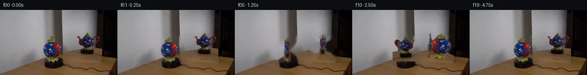

![首帧]()

Round 00
2026-11-05T05:09:14.393809+00:00像素候选变化代码 +222/−0inspection 更新
pixels cce7e0b41b05ca94 · code 3b4d80de6d922b3d
查看本轮 generate.py 真实 diff
--- previous/generate.py
+++ current/generate.py
@@ -0,0 +1,222 @@
+#!/usr/bin/env python3
+"""Generate a fixed-camera teapot rotation from the two views in first_frame.png."""
+
+from pathlib import Path
+import math
+
+import cv2
+import numpy as np
+from PIL import Image, ImageDraw
+
+from artifact_io import save
+
+
+ROOT = Path(__file__).resolve().parent
+SOURCE = np.asarray(Image.open(ROOT / "first_frame.png").convert("RGB"))
+H, W = SOURCE.shape[:2]
+
+
+def colored_object_mask(image, box, role):
+ """Segment a colorful teapot from the neutral room/table with deterministic seeds."""
+ x0, y0, x1, y1 = box
+ crop = image[y0:y1, x0:x1]
+ hsv = cv2.cvtColor(crop, cv2.COLOR_RGB2HSV)
+ sat, val = hsv[..., 1], hsv[..., 2]
+
+ # Strongly coloured enamel and gold are reliable foreground seeds.
+ colour = (sat > 54) & (val > 27)
+ near_colour = cv2.dilate(colour.astype(np.uint8), np.ones((7, 7), np.uint8)) > 0
+ dark_detail = near_colour & (val < 142)
+
+ gc = np.full(crop.shape[:2], cv2.GC_PR_BGD, np.uint8)
+ gc[[0, -1], :] = cv2.GC_BGD
+ gc[:, [0, -1]] = cv2.GC_BGD
+ gc[colour] = cv2.GC_FGD
+ gc[dark_detail] = cv2.GC_PR_FGD
+
+ # Neutral metal knob/finial is too small for colour seeding.
+ if role == "direct":
+ cv2.rectangle(gc, (21, 5), (28, 17), cv2.GC_PR_FGD, -1)
+ cv2.ellipse(gc, (25, 33), (16, 18), 0, 0, 360, cv2.GC_PR_FGD, -1)
+ # Do not let the turntable housing join the teapot.
+ gc[59:, :] = cv2.GC_BGD
+ else:
+ cv2.rectangle(gc, (24, 2), (34, 15), cv2.GC_PR_FGD, -1)
+ cv2.ellipse(gc, (29, 35), (18, 19), 0, 0, 360, cv2.GC_PR_FGD, -1)
+ gc[58:, :] = cv2.GC_BGD
+
+ bg_model = np.zeros((1, 65), np.float64)
+ fg_model = np.zeros((1, 65), np.float64)
+ cv2.grabCut(crop, gc, None, bg_model, fg_model, 5, cv2.GC_INIT_WITH_MASK)
+ mask = ((gc == cv2.GC_FGD) | (gc == cv2.GC_PR_FGD)).astype(np.uint8)
+
+ # Retain small appendages, connect one-pixel fractures, and reject isolated noise.
+ mask |= colour.astype(np.uint8)
+ mask = cv2.morphologyEx(mask, cv2.MORPH_CLOSE, np.ones((3, 3), np.uint8))
+ count, labels, stats, _ = cv2.connectedComponentsWithStats(mask, 8)
+ kept = np.zeros_like(mask)
+ for i in range(1, count):
+ component = labels == i
+ if stats[i, cv2.CC_STAT_AREA] >= 3 and np.any(component & colour):
+ kept[component] = 1
+
+ # Subpixel alpha at the silhouette, while leaving handle openings transparent.
+ alpha = cv2.GaussianBlur(kept.astype(np.float32), (0, 0), 0.55)
+ alpha[alpha < 0.04] = 0
+ alpha[alpha > 0.96] = 1
+ return alpha
+
+
+def rgba_crop(image, box, alpha):
+ x0, y0, x1, y1 = box
+ rgb = image[y0:y1, x0:x1].astype(np.float32)
+ return rgb, alpha.astype(np.float32)
+
+
+def resized_pair(rgb, alpha, size):
+ w, h = size
+ return (
+ cv2.resize(rgb, (w, h), interpolation=cv2.INTER_LINEAR),
+ cv2.resize(alpha, (w, h), interpolation=cv2.INTER_LINEAR),
+ )
+
+
+def flipped(rgba):
+ return rgba[0][:, ::-1].copy(), rgba[1][:, ::-1].copy()
+
+
… diff truncated; 135 more lines …